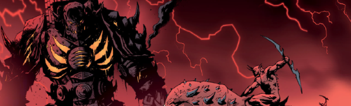

Shadow of the Colossus meets the ninth circle of Hell, as a demon-bound engine of destruction provides an unlikely sanctuary for the few survivors of an infernal takeover of their medieval world.
Art by Karl Richardson
| Story Title | Parts | Pages | w indicates a wraparound coverCovers | Year(s) | Issues | Writer | Artist | Colourist | Letterer |
|---|---|---|---|---|---|---|---|---|---|
From Tharg's 3rillersMechastopheles | 3 | 15 | 2046: Karl Richardson 1 | 2017 | Reprints: M433‑S2045-2047 | Gordon Rennie, Lawrence Rennie | Karl Richardson | <-- | Annie Parkhouse |
| True Faith | 8 | 40 | 2093: Karl Richardson 2099: Karl Richardson 2 | 2018 | Reprints: M433‑S2092-2099 | Gordon Rennie, Lawrence Rennie | Karl Richardson | <-- | Simon Bowland |
| The Hunting Party | 4 | 20 | 2237: Dave Kendall 1 | 2021 | 2234-2237 | Gordon Rennie, Lawrence Rennie | Boo Cook | <-- | Annie Parkhouse |
| year | episodes | pages |
| 2002 | 0 | 0 |
| 2003 | 0 | 0 |
| 2004 | 0 | 0 |
| 2005 | 0 | 0 |
| 2006 | 0 | 0 |
| 2007 | 0 | 0 |
| 2008 | 0 | 0 |
| 2009 | 0 | 0 |
| 2010 | 0 | 0 |
| 2011 | 0 | 0 |
| 2012 | 0 | 0 |
| 2013 | 0 | 0 |
| 2014 | 0 | 0 |
| 2015 | 0 | 0 |
| 2016 | 0 | 0 |
| 2017 | 3 | 15 |
| 2018 | 8 | 40 |
| 2019 | 0 | 0 |
| 2020 | 0 | 0 |
| 2021 | 4 | 20 |
| 2022 | 0 | 0 |